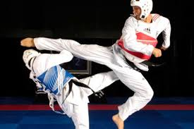

O que é Taekwondo?

O Taekwondo é uma arte marcial coreana conhecida pelos chutes rápidos e potentes. É também um esporte olímpico desde 2000.
Site oficial mundialJogos Olímpicos

O Taekwondo é uma arte marcial coreana conhecida pelos chutes rápidos e potentes. É também um esporte olímpico desde 2000.
Site oficial mundial